Светящийся блик в бокале
1. Создайте новый документ размером 1200 х 1024 рх (потом при желании можно будет обрезать лишнее). В качестве фона установите цвет R: 27; G: 17; В: 8.
2. Ближе к нижнему левому углу создайте выделенную область с помощью инструмента Ellipse Mask (Эллиптическая маска) (рис. 1, уменьшено).
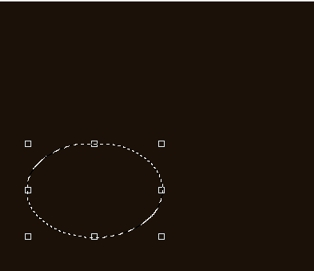
3. Переключитесь в режим Paint On Mask (Рисовать по маске) в меню Mask (Маска) или нажмите Ctrl + K.
4. Выполните команду Effects > Blur > Gaussian Blur (Эффекты > Размытость > Размытость по Гауссу) и установите значение параметра Radius (Радиус) равным 90 рх. Нажмите ОК (рис. 2).
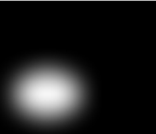
5. Выйдите из режима Paint On Mask (Рисовать по маске), нажав еще раз Ctrl + K.
6. На панели Toolbox (Набор инструментов) выберите инструмент Fill (Заливка). На Панели свойств выберите в качестве текущей, тип заливки – Uniform (Однородная). На Панели свойств щелкните кнопку Edit fill (Изменить заливку), откроется диалоговое окно соответствующее данному типу заливки. В качестве цвета заливки выберите цвет R: 73; G: 37; B: 13. Залейте выделенную область.
7. Удалите маску, нажав Ctrl + R.
8. Теперь займемся бокалом (рис. 3). Выделите бокал. Для этого я использовал инструменты Magic Wand Mask (Маска волшебной палочкой) с значением Tolerance (Допуска) 5 и Brush Mask (Маска кисти). Вы можете использовать любой другой инструмент выделения.
9. Вставьте бокал в созданный нами документ и уменьшите его так, чтобы он был меньше залитой области (рис. 4).
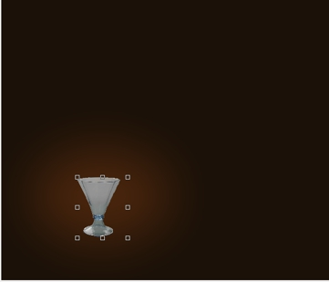
10. Теперь нам нужно сделать его прозрачным и придать более симпатичный вид. Для добавления прозрачности воспользуемся докером Objects (Объекты). Наш бокал должен быть виден в докере, как Object 1 (Объект 1). Щелкните на нем в докере правой кнопкой мыши и в меню выберите команду Properties (Свойства). В диалоговом окне Object Properties (Свойства объекта), установите параметры, как показано на рис. 5.
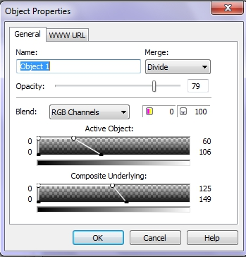
Как видно на рис. 5, режим наложения в раскрывающемся списке Merge (Слияние), я выбрал Devide, Opacity (Непрозрачность) = 79. В этом же окне, в нижней части, есть два интерактивных элемента управления: Active Object (Активный объект) и Composite Underlying (Совмещение изображений). С помощью мыши установите параметры, как на рисунке и щелкните ОК (рис. 6, часть изображения с бокалом увеличена).
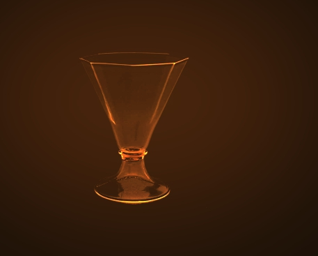
11. Теперь создадим видимость жидкости в бокале. Для этого выделите с помощью инструмента Freehand Mask (Маска свободной формы) область для жидкости (рис. 7). На этом этапе, вы можете более точно подобрать и подогнать размеры. Я увеличил немного бокал, почти до размеров размытой, залитой области. Кроме этого, с помощью инструмента Mask Transform (Преобразование маски) (горячая клавиша М) вы можете подогнать размер и расположение созданной маски.
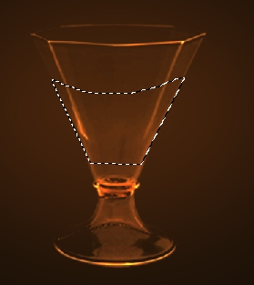
12. Снова переключитесь в режим Paint On Mask (Рисовать по маске) в меню Mask (Маска) или нажмите Ctrl + K и размойте маску с помощью фильтра Gaussian Blur (Размытость по Гауссу), но установите значение параметра Radius (Радиус) равным 15 рх. Нажмите ОК. После размывки отключите режим Paint On Mask (Рисовать по маске).
13. На панели Toolbox (Набор инструментов) выберите инструмент Interactive Fill (Интерактивная заливка) (горячая клавиша G) и залейте выделенную область (рис. 8). На Панели свойств, в раскрывающемся списке Fill type (Тип заливки), выберите тип заливки – Linear (Линейная). В качестве первого цвета заливки установите цвет: цвет R: 44; G: 30; B: 19, а в качестве второго цвета: R: 241; G: 123; B: 28.
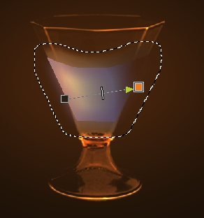
14. Теперь преобразуем маску в объект, для чего нажмите Ctrl + стрелка вверх. В этот момент, Photo-Paint может вам выкинуть одно из своих любимых окон предупреждения (рис. 9). Нажмите в нем Yes (Да).
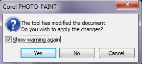
15. В докере Objects (Объекты) установите режим наложения – Subtract. Выполните команду Object > Feather (Объект > Размыть края). В диалоговом окне установите, как на рис. 10.
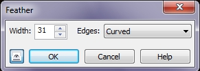
16. Щелкните на нем в докере правой кнопкой мыши и в меню выберите команду Properties (Свойства). В диалоговом окне Object Properties (Свойства объекта), установите параметры Active Object (Активный объект) и Composite Underlying (Совмещение изображений), как показано на рис. 11.
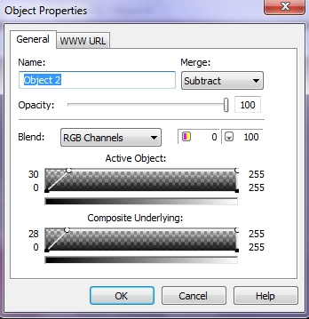
17. Создадим теперь эффект свечения. Установите цвет заливки на белый и выберите на панели Toolbox (Набор инструментов) инструмент Ellipse (Эллипс). На Панели свойств установите параметры и нарисуйте эллипс (рис. 12).
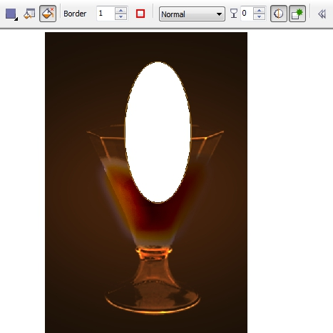
На рисунке показан нарисованный эллипс и Панель свойств. Были выбраны следующие параметры для эллипса: кнопка Disable fill (Выключить заливку) нажата, значение Outline width (Толщина абриса) = 1, кнопки Anti-aliasing (Сглаживание) и New object (Создать объект) нажаты. В качестве цвета абриса выбран цвет фона изображения. Цвет абриса соответствует цвету краски – Foreground Color (Цвет переднего плана), поэтому поменяв цвет краски перед созданием эллипса, вы автоматически зададите цвет абриса.
18. Применим теперь к эллипсу размывку. Выполните команду Effects > Blur > Gaussian Blur (Эффекты > Размытость > Размытость по Гауссу) и установите значение параметра Radius (Радиус) равным 40 рх. Нажмите ОК (рис. 13).
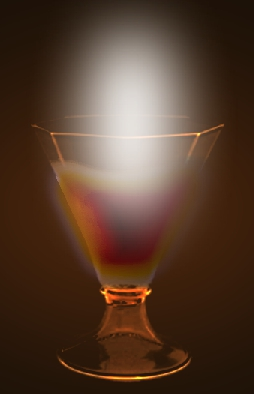
19. Теперь нужно этот «светящийся» объект перетащить в докере Objects (Объекты) на самый низ, ниже остальных объектов. При этом, у вас исказится цвет жидкости в бокале. Не обращайте на это внимание. Выделите объект-жидкость и продублируйте его, нажав Ctrl + D. При необходимости перетащите его (дубликат) на самый верх (сделайте верхним) в докере Objects (Объекты). Режим наложения установите Normal.
20. Теперь нужно добиться желаемого результата с «светящимся» объектом. Для этого нужно просто подобрать его размер и еще раз применить фильтр Gaussian Blur (Размытость по Гауссу) и установите значение параметра Radius (Радиус) равным 40 рх. Нажмите ОК. Размывка на этот раз применялась с целью убрать яркое белое пятно по центру «светящегося» объекта, т. к. при уменьшении его размера, его центр стал сплошным белым цветом, отчего не стало видно грани бокала. После размывки этот объект стал прозрачным (рис. 14).

21. Добавим теперь в бокал эффект освещения. Применим фильтр Lens Flare (Блик объектива). Для вызова фильтра выполните команду Effects > Camera > Lens Flare (Эффекты > Камера > Блик объектива). Выберем внизу окна фильтра заготовку Nuclear Blast, но изменим параметры на вкладках Flares (Блики) и Rays (Лучи), в окне фильтра, как показано на рис. 15. Цвет на обеих вкладках выбран оранжевый. Центр блика установите на поверхности жидкости в бокале (рис. 16). Если вас не устраивает данный эффект, можете попробовать изменить цвет и яркость на вкладках фильтра.
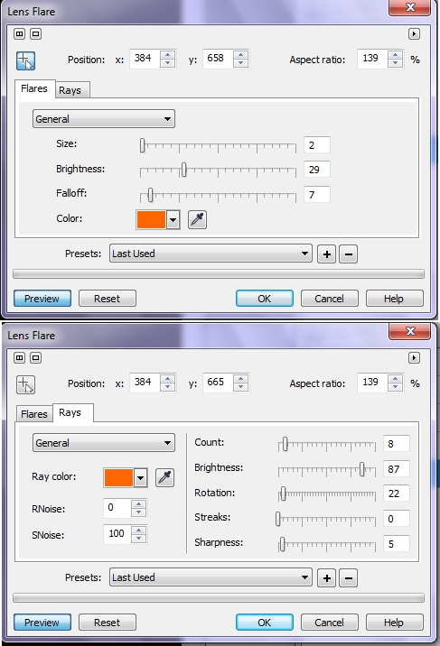
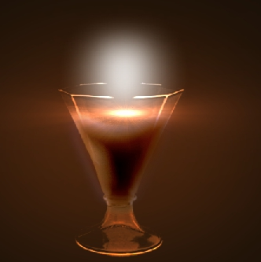
22. Теперь нам осталось немного приукрасить наш результат. Добавим немного «блесток». Переключитесь на инструмент Paint (Краска). В качестве цвета краски установите цвет: R: 184; G: 128; В: 29. В докере Brush Settings (Настройки кисти) (Ctrl + F8) установите параметры кисти, как на рис. 17. На рисунке показана верхняя и нижняя часть докера. Была выбрана мягкая круглая кисть, размером 20, кнопки Toggle Orbits (Переключать орбиты) и Include Center (Включать центр) нажаты.
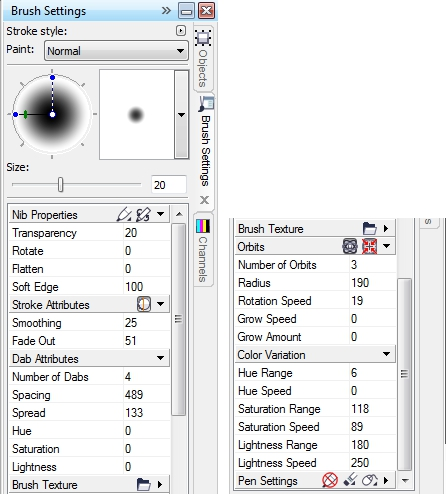
Проведите кистью от верхушки светящегося пятна вверх. Рисунок готов (рис. 18).
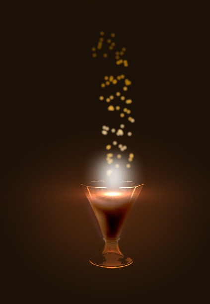
Часть рисунка была обрезана, а сам он уменьшен, чтобы скриншот был небольшим, потому что было создано большое по размеру изображение. На самом деле, справа еще осталось много места. Можно добавить было бы туда бутылку с напитком, добавить может быть текст и получилась бы почти реклама напитка :). Можно еще было повозиться с прозрачностью жидкости, но я уже не стал этого делать.
не очень.
demichev82, что именно? :)
Sancho!Ну, наверное demichev82 имел ввиду, что шедевр не получился :) :) Хотя это ведь урок, а не "полотно Рембранта". В уроках более ценным, на мой взгляд - это описание метода и способа получения какого-то результата. Всяк читающий может сделать что-то свое и гораздо лучше и красивей, взяв из урока нужную для себя информацию. И мне кажется, что это касается и Photo-Paint и Draw, да и любой программы. Хотя, когда в уроке, результат очень зрелищный, смотрится он конечно лучше.